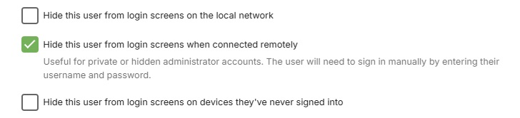
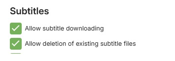
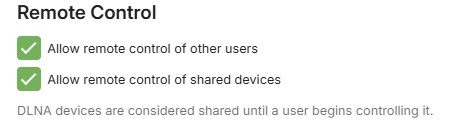
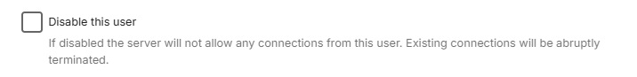

Sicherung Ihres Servers
Dies ist ein kurzes Tutorial, wie Sie Ihren Emby Server kostenlos sichern können. Wenn Sie Ihren Server der Welt zugänglich machen, ist es sinnvoll, ihn zu sichern. Es ist auch nützlich, erforderliche gesicherte Streams für externe Dienste wie Amazon Alexa oder Google Home bereitzustellen.
Allgemeine Tipps & Best Practices
Hier sind einige Tipps, die Sie beachten sollten.
Server-Admin-Konto
Vermeiden Sie es, dem Admin-Benutzerkonto für den Emby Server den Namen "admin" oder "root" zu geben.
Wenn der Benutzername bereits so festgelegt ist, können Sie ihn über die Servereinstellungen / Benutzerbildschirm bearbeiten und das Profil bearbeiten.
Trennen Sie Ihre Admin- und normale Nutzung des Emby Servers. Haben Sie ein separates Konto für die normale Nutzung und das Streaming und behalten Sie das Konto mit Admin-Rechten als separates Konto, das nur für die Serveradministration genutzt wird.
Sie können steuern, welche Konten die Möglichkeit haben, den Server über diese Benutzereinstellung zu verwalten.
Überlegen Sie, das Admin-Benutzerkonto (oder jedes Konto mit Admin-Rechten) aus der Liste der angezeigten Benutzerkonten für die Anmeldung zu verbergen. Wenn es verborgen ist, verwenden Sie die Option "Manuelle Anmeldung" und geben Sie den Benutzernamen und das Passwort ein. Das Folgende zeigt die verschiedenen verfügbaren Optionen, um einen Benutzernamen zu verbergen.

Erwägen Sie, Fernverbindungen für das Admin-Konto zu deaktivieren. Dies kann erfolgen, sobald die Konfiguration für Fernverbindungen eingerichtet und funktionsfähig ist. Wenn Änderungen an der Serverkonfiguration erforderlich sind, verwenden Sie Tools wie Team Viewer, Remote Desktop, AnyDesk usw.

Fernverbindungen
Falls der Server nur lokal genutzt werden soll, deaktivieren Sie den Fernzugriff auf der Serverebene, indem Sie diese Netzwerkeinstellung des Servers deaktivieren.
Note
Wenn Sie ein VPN im lokalen Netzwerk verwenden, müssen Sie dies möglicherweise zulassen oder alternativ das VPN-Subnetz zur Liste der lokalen Netzwerke im Servernetzwerkeinstellungen hinzufügen
Wenn Sie einen Domainnamen für den Zugriff auf den Emby Server verwenden, sollten Sie überlegen, nicht das Wort „emby“ als Teil des Domainnamens zu verwenden.
Verwenden Sie für Fernverbindungen HTTPS sichere Verbindungen. Siehe Abschnitt Verwendung von sicheren HTTPS-Verbindungen unten.

Wenn der Fernzugriff aktiviert und kein Reverse Proxy verwendet wird, sollten Sie überlegen, die Standardöffentlichen Portnummern zu ändern. Dafür müssten Sie die automatische Portzuordnung (uPnP) deaktivieren und stattdessen manuelles Port-Forwarding auf Ihrem Router für die öffentlichen HTTP und HTTPS Portnummern einrichten, um sie auf die lokalen HTTP und HTTPS Portnummern in den Routereinstellungen weiterzuleiten.
Ein Beispiel: Wenn Sie den öffentlichen Port 32700 für HTTP und den öffentlichen Port 32800 für HTTPS verwenden, dann sollten Sie zuerst sicherstellen, dass der Server eine statische oder DHCP-reservierte lokale TCP-IP-Adresse im Router eingestellt hat, und dann manuelles Port-Forwarding zu dieser IP-Adresse für TCP-Öffentlicher Port 32700 zur lokalen Port 8096 und TCP-Öffentlicher Port 32800 zur lokalen Port 8920 einrichten. Es sollte keine Notwendigkeit bestehen, die lokalen Ports von den Standardwerten zu ändern. Siehe Artikel zum Fernzugriff.
Benutzerkonto-Berechtigungen
- Überprüfen Sie alle Kontoberechtigungen in den Benutzerprofilen (Servereinstellungen / Benutzer) und gewähren Sie die geringsten Berechtigungen, wobei sichergestellt wird, dass nur Ihr Serveradministratorkonto die Berechtigung hat, den Server zu verwalten. Stellen Sie sicher, dass die Löschung von Medien kontrolliert und nur auf die Konten, denen Sie diese Berechtigung anvertrauen wollen, beschränkt ist.
Das Folgende zeigt die Kontrolle, die Sie auf der Benutzerkontenebene haben. Zum Beispiel kann der Fernzugriff auch auf Benutzerebene kontrolliert werden.

Note
Sie können „Alle Bibliotheken“ abwählen und spezifische Bibliotheken auswählen.


Sie können auch Benutzer deaktivieren

Verwendung von sicheren HTTPS-Verbindungen
Wenn Sie an einer noch sichereren Einrichtung interessiert sind, finden Sie hier eine Community-geschriebene Anleitung zu HOW TO: NGINX Reverse Proxy.
Sie benötigen zwei Dinge:
- Eine Domain, die TXT-Einträge unterstützt
- Ein SSL-Zertifikat (PKCS #12)
Ihre Domain erhalten
Melden Sie sich für eine kostenlose Domain Ihrer Wahl an. Sie könnten Freenom oder Dynu verwenden.
SSL-Zertifikat
Wir werden nun Let's Encrypt SSL-Zertifikate erstellen und es Ihrer Domain hinzufügen. Hier ist ein kostenloser Dienst, um dabei zu helfen SSL for free.
Geben Sie Ihre Domain auf der Seite ein, z.B. yourdomain.com, und erstellen Sie ein kostenloses SSL-Zertifikat.
Wählen Sie "Manuelle Überprüfung (DNS)" > "Domain manuell bestätigen". Wir haben nun 2 TXT-Einträge (Schritt 2 auf der SSL for free Website). Wir kopieren die TXT-Einträge zurück zum Domainanbieter. Die Seite „SSL for free“ geöffnet lassen. Wir kommen darauf zurück.

Auf der Domainanbieter-Website wählen Sie Ihre Domain > DNS verwalten. Lassen Sie uns einen neuen TX-Eintrag erstellen. Wiederholen Sie die Schritte für beide TXT-Einträge auf SSL for free. Ihre Informationen sollten folgendermaßen aussehen.
Name: _acme-challenge.{yourdomain.com}
Typ: TXT.
TTL: 300 (wenn Sie es auf 1 setzen können, tun Sie dies).
Ziel: qariKbGVafpb5MespqHdMaGi933yW-Z2A3shE0wIyZA
Sie werden Typ-A-Einträge im selben Abschnitt bemerken. Sie können den WWW-Eintrag entfernen. Stellen Sie sicher, dass Ihre externe IP korrekt ist. Wenn Sie eine dynamische IP haben, müssen Sie diese aktualisieren, wenn sie sich ändert.
Warten Sie etwa 15 Minuten. Lassen Sie den Domainnamen und die Änderungen verbreiten.
Zurück zur SSL for free Website. Sehen Sie sich Schritt 3 an, Sie werden einen oder zwei Links sehen, auf die Sie klicken können. Wenn es erfolgreich ist, klicken Sie auf SSL-Zertifikat herunterladen. Wenn es nicht erfolgreich ist, warten Sie ein wenig länger und versuchen Sie es erneut.
Emby mit Ihrer Domain und SSL-Zertifikat einrichten
Jetzt sollten Sie eine Domain und einen Ordner mit SSL-Zertifikaten (ca_bundle.crt, certificate.crt, private.key) haben. Wir sind fast fertig. Ihr Emby-Server benötigt ein PKCS #12-Zertifikat (certificate.crt und private.key kombiniert).
Verwenden Sie diesen online certificate converter.
Wählen Sie den Typ, zu dem konvertiert werden soll: PKCS #12. Dies sollte die Anzahl der Felder erweitern. Nach Abschluss erhalten Sie ein neues .pfx-Zertifikat.
Zertifikatsdatei: certificate.crt
Privater Schlüssel: private.key
Kettenzertifikat: Das ca_bundle.crt oder Sie können es auch hier finden, Let's Encrypt Intermediate certificate. Speichern Sie den Text in einer .txt-Datei.
PFX-Passwort: Da der private Schlüssel mit dem Zertifikat kombiniert ist, setzen Sie ein Passwort, um das neue SSL-Zertifikat zu sichern. Merken Sie sich dieses Passwort, Sie werden es in Emby benötigen.
Gehen Sie zu Ihrem Emby-Server-Dashboard > Erweitert. Speichern Sie Ihre Änderungen und starten Sie Ihren Server neu.
Externe Domain: yourdomain.com
Pfad zu eigenem SSL-Zertifikat: Zeigen Sie auf Ihr neues certificate.pem
Zertifikatspasswort: Das Passwort, das Sie im vorherigen Schritt festgelegt haben.
Modus für sichere Verbindung: Setzen Sie es auf Bevorzugt, aber nicht erforderlich oder Erforderlich für alle Fernverbindungen.
Ihr Dashboard sollte nun Ihren Fernzugriff als https://yourdomain.com:port widerspiegeln. Wenn Sie alle Schritte befolgt haben, sollte das Klicken auf die neue Remote-URL Ihren Emby-Server erreichen. Wenn es nicht funktioniert, überprüfen Sie Ihre HTTPS-Ports und versuchen Sie, von außerhalb Ihres Netzwerks zu verbinden.
Speichern Sie alle Ihre Zertifikatsdateien und Schlüssel an einem sicheren Ort. Sie werden den privaten Schlüssel benötigen, wenn Sie bereit sind, Ihr SSL-Zertifikat zu erneuern (Ich habe meine eigene CSR-Option auf SSL for free eingesetzt). Da dies alles kostenlos ist, erfordert es ein wenig mehr Engagement. Sie müssen sicherstellen, dass Sie Ihre SSL-Zertifikate (alle 3 Monate bei SSL for free) und Ihre kostenlose Domain (mindestens einmal im Jahr) erneuern. Wenn Sie SSL for free verwendet haben, empfehle ich, ein Konto zu erstellen, um den Erneuerungsprozess zu erleichtern.